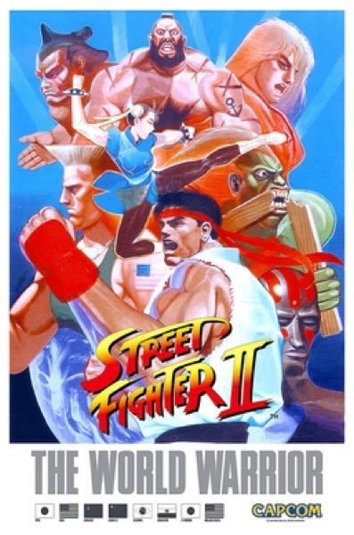

Fighting · 1991
Street Fighter II
Six buttons, eight world warriors, and the arcade boom that followed.

Cover: Wikipedia: Street Fighter II
Facts
- Released
- 1991-02-06
- Genre
- Fighting
- Category
- Fighting
- Platforms
- Arcade, Mobile, Nintendo, PC, PlayStation, Retro home computer, Sega, Xbox
- Developers
- Capcom
- Publishers
- Data East